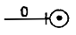
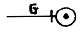
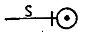
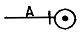
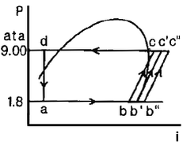
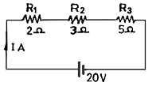
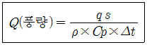

공조냉동기계기능사 (2008-10-05 기출문제)
1과목: 공조냉동안전관리
1. 안전대용 로우프의 구비 조건과 관련이 없는 것은?
- 완충성이 높을 것
- 질기고 되도록 매끄러울 것
- 내마모성이 높을 것
- 내열성이 높을 것
(정답률: 75%)

2. 재해 발생 중 사람이 건축물, 비계, 기계, 사다리, 계단 등에서 떨어지는 것을 무엇이라고 하는가?
- 도괴
- 낙하
- 비래
- 추락
(정답률: 91%)
3. 물을 소화제로 사용하는 가장 큰 이유는?
- 연소하지 않는다.
- 산소를 잘 흡수한다.
- 기화잠열이 크다.
- 취급하기가 편리하다.
(정답률: 80%)
4. 연삭기 숫돌의 파괴원인에 해당되지 않는 것은?
- 숫돌의 속도가 너무 빠를 때
- 숫돌에 균열이 있을 때
- 플랜지가 현저히 클 때
- 숫돌에 과대한 충격을 줄 때
(정답률: 74%)
5. 냉동 제조시설 중 압축기 최종단에 설치한 안전장치의 작동 점검실시 시 기준으로 옳은 것은?
- 3월에 1회 이상
- 6월에 1회 이상
- 1년에 1회 이상
- 2년에 1회 이상
(정답률: 83%)
6. 스패너(spanner)사용시 주의할 사항 중 틀린 것은?
- 스패너가 벗겨지거나 미끄러짐에 주의한다.
- 스패너의 입이 너트 폭과 잘 맞는 것을 사용한다.
- 스패너 길이가 짧은 경우에는 파이프를 끼어서 사용한다.
- 무리하게 힘을 주지 말고 조심스럽게 사용한다.
(정답률: 94%)
7. 냉동장치를 정상적으로 운전하기 위한 것이 아닌 것은?
- 이상고압이 되지 않도록 주의한다.
- 냉매부족이 없도록 한다.
- 습압축이 되도록 한다.
- 각부의 가스 누설이 없도록 유의한다.
(정답률: 90%)
8. 다음 중 보호구로서 갖추어야 할 조건이 아닌 것은?
- 착용시 작업에 지장이 없을 것
- 대상물에 대하여 방호가 충분할 것
- 보호구 재료의 품질이 우수할 것
- 성능보다는 외관이 좋을 것
(정답률: 95%)
9. 다음 중 고압선과 저압 가공선이 병가된 경우 접촉으로 인해 발생하는 것과 1, 2차코일의 절연파괴로 인하여 발생하는 현상과 관계있는 것은?
- 단락
- 지락
- 혼촉
- 누전
(정답률: 78%)
10. 다음 중 안전관리에 대한 설명으로 적절하지 못한 것은?
- 인간의 생명과 재산 보호
- 비체계적인 제반 활동
- 체계적인 제반 활동
- 인간생활의 복지 향상
(정답률: 79%)
11. 다음 중 정전기 방전의 종류가 아닌 것은?
- 불꽃 방전
- 연면 방전
- 분기 방전
- 코로나 방전
(정답률: 58%)
12. 운반기계에 의한 운반작업 시 안전수칙에 어긋나는 것은?
- 운반대 위에는 여러 사람이 타지 말 것
- 미는 운반차에 화물을 실을 때에는 앞을 볼 수 있는 시야를 확보할 것
- 운반차의 출입구는 운반차의 출입에 지장이 없는 크기로 할 것
- 운반차에 물건을 쌓을 때 될 수 있는 대로 전체의 중심이 위가 되도록 쌓을 것
(정답률: 93%)
13. 냉동장치 운전 중 안전상 별로 위험이 없는 경우에 해당되는 것은?
- 액면계 파손 시 볼밸브가 작동불량인 경우
- 고압측에 안전밸브가 설치되지 않는 경우
- 수액기와 응축기를 연락하는 균압관의 스톱 밸브를 닫지 않았을 경우
- 팽창밸브 직전에 전자밸브가 있는 경우 압축기 출구밸브를 닫고 장시간 운전했을 경우
(정답률: 60%)
14. 보일러 사고원인 중 제작상의 원인이 아닌 것은?
- 재료불량
- 설계불량
- 급수처리불량
- 구조불량
(정답률: 87%)
15. 아크 용접작업에서 전격의 방지대책으로 올바르지 못한 것은?
- 용접기의 내부에 함부로 손을 대지 않는다.
- 절연 홀더의 절연부분이 노출·파손되면 곧 보수하거나 교체한다.
- TIG 용접이나 MIG 용접기가 수냉식 토치에서 냉각수가 새어나오면 사용을 시작한다.
- 맨홀 등과 같이 밀폐된 구조물 안이나 앞쪽에 막혀 잘 보이지 않는 장소에서 작업을 할 때에는 자동 전격방지기를 부착하여 사용한다.
(정답률: 84%)
2과목: 냉동기계
16. 냉동기에서 압축기의 기능이라 할 수 없는 것은?
- 냉매를 순환시킨다.
- 응축기에 냉각수를 순환시킨다.
- 냉매의 응축을 돕는다.
- 저압을 고압으로 상승시킨다.
(정답률: 56%)
17. 단열압축, 등온압축, 폴리트로픽압축에 관한 다음 사항 중 틀린 것은?
- 압축일량은 단열압축이 제일 크다.
- 압축일량은 등온압축이 제일 작다.
- 실제 냉동기의 압축 방식은 폴리트로픽 압축이다.
- 압축가스 온도는 폴리트로픽 압축이 제일 높다.
(정답률: 52%)
18. 다음 브라인(Brine)에 관한 설명 중 옳은 것은?
- 식염수 브라인의 공정점보다 염화칼슘 브라인의 공정점이 높다.
- 브라인의 부식성을 없애기 위해 되도록 공기와 접촉시키지 않는 것이 좋다.
- 무기질 브라인보다 유기질 브라인이 부식성이 더 크다.
- 브라인은 약한 산성이 좋다.
(정답률: 61%)
19. 온도 자동팽창 밸브에서 감온통의 부착위치는?
- 팽창밸브 출구
- 증발기 입구
- 증발기 출구
- 수액기 출구
(정답률: 69%)
20. 유접점 시퀀스의 특징으로 틀린 것은?
- 수명이 길다.
- 소비전력이 많다.
- 작동 속도가 늦다.
- 장치 외형이 크다.
(정답률: 34%)
21. 다음 중 수소, 염소, 불소, 탄소로 구성된 냉매계열은?
- HFC 계
- HCFC 계
- CFC 계
- 할론 계
(정답률: 82%)
22. 소요 냉각수량 120ℓ/min, 냉각수 입 · 출구 온도차 6℃인 수냉 응축기의 응축부하는?
- 43200kcal/h
- 14400kcal/h
- 12000kcal/h
- 6400kcal/h
(정답률: 47%)
23. 어떤 냉동기를 사용하여 25℃ 의 순수한 물 100ℓ를 -10℃의 얼음으로 만드는 데 10분이 걸렸다고 한다면, 이 냉동기는 약 몇 냉동톤인가? (단, 1냉동톤은 3320kcal/h, 냉동기의 모든 효율은 100%이다.)
- 3 냉동톤
- 16 냉동톤
- 20 냉동톤
- 25 냉동톤
(정답률: 40%)
24. 시트 모양에 따라 삽입형, 홈꼴형, 유합형 등이 있으며, 냉매 배관용으로 사용되는 이음법은?
- 플레어 이음
- 나사 이음
- 납땜 이음
- 플랜지 이음
(정답률: 63%)
25. 관속을 흐르는 유체가 가스관을 나타내는 것은?




(정답률: 86%)
26. 그림에서 습압축 냉동사이클은 어느 것인가?

- ab'c'da
- bb"c"cb
- ab"c"da
- abcda
(정답률: 66%)
27. 열과 일의 관계를 바르게 나타낸 것은? (단, J = 열의 일당량, A = 일의 열당량, W = 소요되는 일, Q = 발생열량이다.)
- Q = AW
- W = (1/J)Q
- W = AQ
- J = AW
(정답률: 70%)
28. 저단측 토출가스의 온도를 냉각시켜 고단측 압축기가 과열되는 것을 방지하는 것은?
- 부스터
- 인터쿨러
- 콤파운드 압축기
- 익스펜션탱크
(정답률: 80%)
29. 다음 회로에서 2Ω의 양단에 걸리는 전압강하 V는?

- 2
- 4
- 6
- 10
(정답률: 46%)
30. 다음 중 비등점이 가장 낮은 냉매는? (단, 대기압에서)
- R-500
- R-22
- NH3
- R-12
(정답률: 28%)
31. 1제빙톤은 몇 냉동톤인가? (단, 원료수의 온도는 25 ℃ 기준임)
- 1.25RT
- 1.45RT
- 1.65RT
- 1.85RT
(정답률: 49%)
32. 냉동장치 배관 설치시 주의 사항으로 틀린 것은?
- 관통부 외에는 매설하지 않는다.
- 배관 내 응력 발생이 있는 곳에 루우프형 배관을 한다.
- 기기 조작, 보수, 점검에 지장이 없도록 한다.
- 전체 길이는 짧게 하며 곡률반경을 작게 한다.
(정답률: 75%)
33. 다단압축을 하는 목적은?
- 압축비 증가와 체적효율 감소
- 압축비와 체적효율 증가
- 압축비와 체적효율 감소
- 압축비 감소와 체적효율 증가
(정답률: 59%)
34. 냉동능력 20톤 이상의 냉동설비의 압력계에 관한 설명 중 틀린 것은?
- 냉매설비에는 압축기의 토출 및 흡입압력을 표시하는 압력계를 부착할 것
- 압축기가 강제윤활방식인 경우에는 윤활유 압력을 표시하는 압력계를 부착할 것
- 발생기에는 냉매가스의 압력을 표시하는 압력계를 부착할 것
- 압력계 눈금판의 최고눈금 수치는 당해 압력계의 설치장소에 따른 시설의 기밀시험압력이상이고 그 압력의 1배 이하일 것
(정답률: 76%)
35. 부하측(저압측)압력을 일정하게 유지시켜 주는 밸브는?
- 감압밸브
- 안전밸브
- 체크밸브
- 앵글밸브
(정답률: 65%)
36. 동관을 용접이음하려고 한다. 다음 용접법 중 가장 적당한 것은?
- 가스 용접
- 프라즈마 용접
- 테르밋 용접
- 스폿 용접
(정답률: 85%)
37. 전류계로 회로에서 전류를 측정하고자 한다. 전류계의 설명으로 틀린 것은?
- 전류계는 회로와 직렬로 연결하여 측정한다.
- 큰 전류를 측정하기 위해 분류기를 가동코일 계기와 병렬로 접속한다.
- 전류계의 내부 저항은 전류를 못 흐르게 할 만큼 커야 한다.
- 전류계 단자 사이의 전압강하는 40~100mV 정도이다.
(정답률: 65%)
38. 냉동장치의 배관공사에서 옳지 않은 것은?
- 두 계통의 토출관이 합류하는 곳은 Y형 접속으로 한다.
- 압축기 토출관의 수평부분은 응축기를 향해 상향구배를 한다.
- 응축기와 수액기의 균압관은 압력을 같게 하기 위한 것이다.
- 압력 손실은 되도록 작게 하기 위해 굴곡부의 개수를 적게 한다.
(정답률: 43%)
39. 흡수식 냉동장치에서 냉매와 흡수제를 분리하는 것은?
- 발생기
- 응축기
- 증발기
- 흡수기
(정답률: 38%)
40. 원심(Turbo)식 압축기의 특징이 아닌 것은?
- 임펠러(Impeller)에 의해 압축된다.
- 보통 전동기 직결에서는 증속장치가 필요하다.
- 부하가 감소되면 서어징이 일어난다.
- 주로 공기 냉각용으로 직접 팽창방식을 사용한다.
(정답률: 45%)
41. NH3 냉매를 사용하는 냉동장치에서는 열교환기를 설치하지 않는다. 그 이유는?
- 응축 압력이 낮기 때문에
- 증발 압력이 낮기 때문에
- 비열비 값이 크기 때문에
- 임계점이 높기 때문에
(정답률: 60%)
42. 다음 보온재 중 최고사용온도가 가장 큰 것은?
- 탄산마그네슘
- 규조토
- 암면
- 펄라이트
(정답률: 28%)
43. 압축비의 설명 중 알맞는 것은?
- 고압 압력계가 나타내는 압력을 저압 압력계가 나타내는 압력으로 나눈 값에다 1을 더한 값이다.
- 흡입압력이 동일할 때 압축비가 클수록 토출가스 온도는 저하된다.
- 압축비가 적어지면 소요 동력이 증가한다.
- 응축압력이 동일할 때 압축비가 커지면 냉동능력이 감소한다.
(정답률: 38%)
44. 기준 냉동사이클에서 흡입압력이 높은 순서대로 나열된 것은?
- R-12 ＞ R-22 ＞ NH3
- R-22 ＞ NH3 ＞ R-12
- NH3 ＞ R-22 ＞ R-12
- R-12 ＞ NH3 ＞ R-22
(정답률: 23%)
45. 증발기에 대한 다음 설명 중 틀린 것은?
- 건식 증발기에서 냉매액 공급을 상·하부 어디로 하나 전열효과는 같다.
- 프레온을 사용하는 만액식 증발기에서 증발기내 오일이 체류할 수 있으므로 유회수 장치가 필요하다.
- 만액식 증발기에서 오일(oil)이 프레온 냉매에 용해하면 냉동능력이 떨어진다.
- 프레온을 사용하는 건식 증발기에서는 냉매액을 상부로 공급하는 것이 보통이다.
(정답률: 57%)
3과목: 공기조화
46. 덕트의 부속품에 대한 설명으로 잘못된 것은?
- 소형의 풍량 조절용으로는 버터플라이 댐퍼를 사용한다.
- 공조덕트의 분기부에는 베인형 댐퍼를 사용한다.
- 화재시 화염이 덕트 내에 침입하였을 때 자동적으로 폐쇄되도록 방화댐퍼를 사용한다.
- 화재초기 시 연기감지로 다른 방화구역에 연기가 침입하는 것을 방지하는 방연댐퍼를 사용한다.
(정답률: 56%)
47. 팬코일 유닛과 관계없는 것은?
- 송풍기
- 여과기
- 냉온수코일
- 가습기
(정답률: 42%)
48. 공기조화기의 송풍기의 축동력을 산출할 때 필요한 값과 거리가 먼 것은?
- 송풍량
- 현열비
- 송풍기 전압효율
- 송풍기 전압
(정답률: 60%)
49. 온수난방에 이용되는 밀폐형 팽창탱크에 관한 설명으로 옳지 않은 것은?
- 공기층의 용적을 작게 할수록 압력의 변동은 감소한다.
- 개방형에 비해 용적은 크다.
- 통상 보일러 근처에 설치되므로 동결의 염려가 없다.
- 개방형에 비해 보수점검이 유리하고 가압실이 필요하다.
(정답률: 21%)
50. 난방을 하고 있는 사무실 내의 거주 환경에서 가장 적합한 건구온도는 몇 ℃인가?
- 22
- 28
- 30
- 33
(정답률: 57%)
51. 냉방부하의 취득열량에는 현열부하와 잠열부하가 있다. 잠열부하를 포함하는 것은?
- 덕트로부터의 취득열량
- 인체로부터의 취득열량
- 벽체의 전도에 의해 침입하는 열량
- 일사에 의한 취득열량
(정답률: 57%)
52. 다음 환기에 대한 설명으로 틀린 것은?
- 실내의 오염공기를 신선공기로 희석하거나 확산시키지 않고 배출한다.
- 실내에서 발생하는 열이나 수증기를 제거한다.
- 실내압력을 +압력상태로 유지시키면서 환기하는 방식이 제3종 환기법이다.
- 재실자의 건강, 안전, 쾌적성, 작업능률을 향상시킨다.
(정답률: 55%)
53. 다음 중 소규모인 건물에 가장 적합한 공조방식은?
- 패케지 유닛 방식
- 인덕션 유니트 방식
- 이중 덕트 방식
- 복사 냉난방 방식
(정답률: 71%)
54. 에어필터(air filter)의 제진효율에 관한 식으로 올바른 것은? (단, 입구측의 공기 중의 먼지농도 : C1, 출구측 먼지농도 : C2이다.)
- 제진효율 = C2/C1 × 100
- 제진효율 = C1/C2 × 100
- 제진효율 = (1 – C2/C1) × 100
- 제진효율 = (1 – C1/C2) × 100
(정답률: 40%)
55. 다음은 어느 실의 열발생에 따른 부하를 처리하기 위한 급기풍량(m3/h)의 계산식이다. 계산식에서 Δt는 무엇을 나타내는가?

- 상당외기 온도차
- 실내·외 온도차
- 실내설정온도와 실내취출 온도차
- 유효 온도차
(정답률: 33%)
56. 물과 공기의 접촉면적을 크게 하기 위해 증발포를 사용하여 수분을 자연스럽게 증발시키는 가습방식은?
- 초음파식
- 가열식
- 원심분리식
- 기화식
(정답률: 70%)
57. 셸튜브형 열교환기에 관한 설명이다. 옳은 것은?
- 전열관 내 유속은 내식성이나 내마모성을 고려하여 1.8m/s 이하가 되도록 하는 것이 바람직하다.
- 동관을 전열관으로 사용할 경우 유체온도가 150℃ 이상이 좋다.
- 증기와 온수의 흐름은 열교환 측면에서 병행류가 바람직하다.
- 열관류율은 재료와 유체의 종류에 따라 거의 일정하다.
(정답률: 63%)
58. 다음 설명 중 옳지 않은 것은?
- 공기조화장치에서 취급하는 공기는 모두 건공기이다.
- 건공기는 수증기를 포함하지 않는 공기이다.
- 습공기의 전압은 건공기 분압과 수증기분압의 합과 같다.
- 포화공기란 최대한도의 수증기를 포함한 공기를 말한다.
(정답률: 73%)
59. 온수난방에 설치되는 팽창탱크에 대한 설명으로 틀린 것은?
- 팽창된 물을 밖으로 배출하여 장치를 안전하게 유지한다.
- 운전 중 장치 내 압력을 소정의 압력으로 유지하고, 온수온도를 유지한다.
- 운전 중 장치 내의 온도상승에 의한 물의 체적팽창과 압력을 흡수한다.
- 개방식은 장치 내의 주된 공기배출구로 이용되고, 온수보일러의 도피관으로도 이용된다.
(정답률: 33%)
60. 다음 펌프 중에서 비속도가 가장 작은 펌프는?
- 축류펌프
- 사류펌프
- 벌류트펌프
- 터빈펌프
(정답률: 25%)